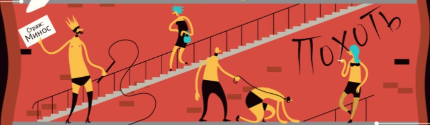
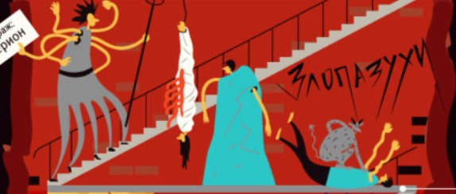

Лимб
Первый круг ада называется Лимб. Стражем его является Харон, который перевозит души усопших через реку Стикс. В первом круге ада мучения испытывают младенцы, которых не крестили, и добродетельные нехристиане. Они обречены на вечное страдание безмолвной скорбью.
изменить выборВторой круг
Второй круг ада охраняет Минос — несговорчивый судья проклятых. Страстных любовников и прелюбодеев в этом круге ада наказывают кручением и истязанием бурей.
 изменить выборТретий круг
Цербер — страж третьего круга, в котором обитают чревоугодники, обжоры и гурманы. Все они наказаны гниением и разложением под палящим солнцем и проливным дождём.
изменить выборЧетвертый круг
Плутос властвует в четвёртом круге, куда попадают скупцы, жадины и расточительные личности, неспособные совершать разумные траты. Наказание им — вечный спор при столкновении друг с другом.
изменить выборБолото Стикс
Пятый круг представляет мрачное и угрюмое место, охраняемое сыном бога войны Ареса — Флегием. Чтобы попасть на пятый круг ада, нужно быть очень гневным, ленивым или унылым. Тогда наказанием будет вечная драка на болоте Стикс.
изменить выборСтены города Дита
Шестой круг — это Стены города Дита, охраняемого фуриями — сварливыми, жестокими и очень злыми женщинами. Глумятся они над еретиками и лжеучителями, наказание которым — вечное существование в виде призраков в раскалённых могилах.
изменить выборСедьмой круг
Седьмой круг ада, охраняемый Минотавром, — для тех, кто совершил насилие. Круг разделён на три пояса:
Флагеон - первый пояс
Первый пояс носит название Флагетон. В него попадают совершившие насилие над своим ближним, над его материальными ценностями и достоянием. Это тираны, разбойники и грабители. Все они кипят во рву из раскалённой крови, а в тех, кто выныривает, стреляют кентавры.
Второй пояс — Лес самоубийц
В нём находятся самоубийцы, а также те, кто бессмысленно растрачивал своё состояние, — азартные игроки и моты. Транжир истязают гончие псы, а несчастных самоубийц рвут на клочки Гарпии.
Третий пояс — Горючие пески
Здесь пребывают богохульники, совершившие насилие над божествами, и содомиты. Наказанием служит пребывание в абсолютно бесплодной пустыне, небо которой капает на головы несчастных огненным дождём.
Восьмой круг
Восьмой круг ада состоит из десяти рвов. Сам круг носит название Злые щели, или Злопазухи. Стражем является Герион — великан с шестью руками, шестью ногами и крыльями. В Злых щелях несут свою нелёгкую судьбу обманщики.
 изменить выборЛедяное озеро Коцит
Девятый круг ада — это Ледяное озеро Коцит. Этот круг охраняют суровые стражи-гиганты по имени
Эфиальт, сын Геи и Посейдона — Антей, полубык, полузмея — Бриарей и Люцифер — стражник дороги к
чистилищу. Этот круг имеет четыре пояса — Пояс Каина, Пояс Антенора, Пояс Толомея, Пояс Джудекка.
В этом круге томятся Иуда, Брут и Кассий. Кроме них, также попасть в этот круг обречены предатели —
родины, родных людей, близких, друзей. Все они вмёрзли в лёд по шею и испытывают вечные муки холодом.
 изменить выбор
изменить выбор